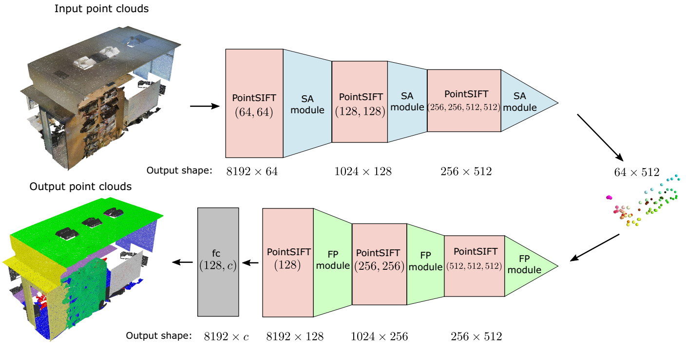
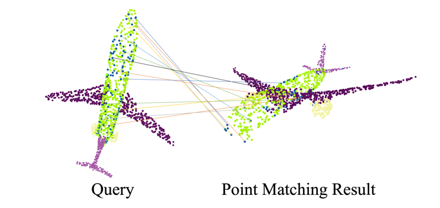
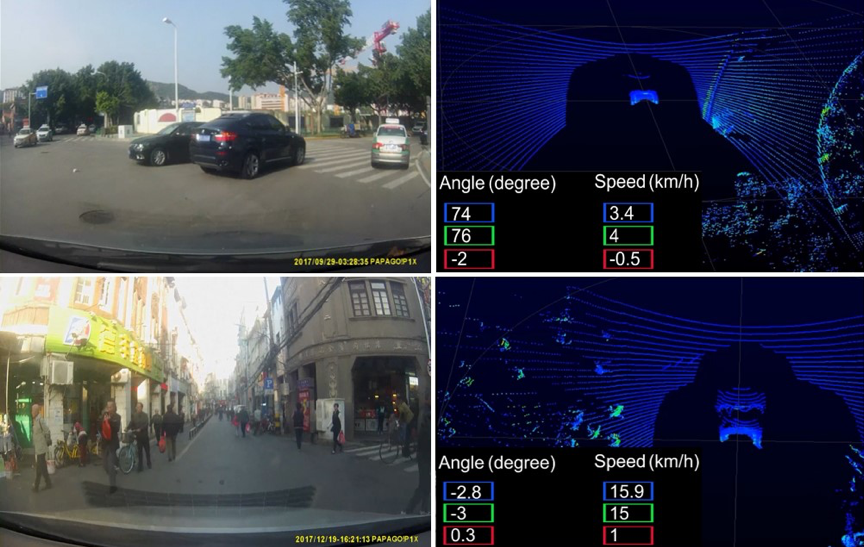
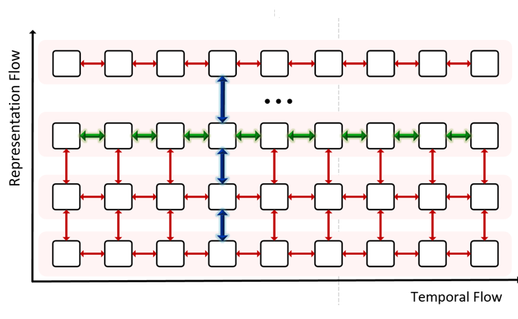
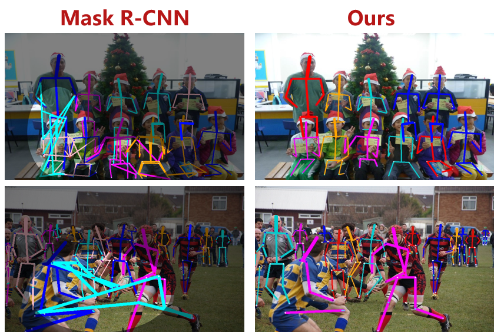
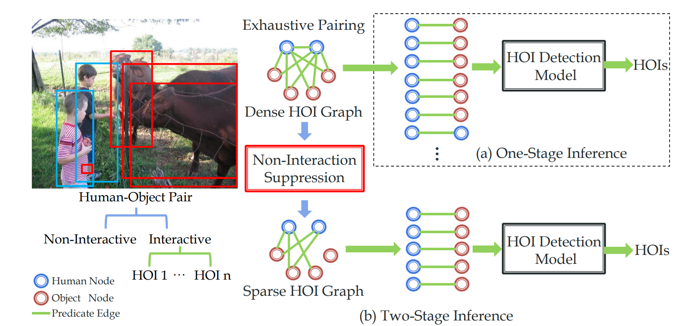

Activity Understanding meets 3D Representation |
|  |  |  |
| pointSIFT | Pointwise Rotation-Invariant Network | DBNET |
| Github paper | Github paper | Dataset paper |
| 描述：一个高效且通用的3D点云表征模块 性能：在S3DIS/Scannet数据集上分别取得12%/8.4%的IoU相对提高 |
描述：很大程度地解决了点云的旋转不变性表征问题 性能：旋转过的测试集上获得20 mIoU的提高（相对提高55%） |
描述：一个大规模的点云与视频到驾驶行为的端对端数据集 |
|  |  |  |
| Deep RNN | AlphaPose beyond COCO | Interactiveness Prior |
| Github paper | Github paper | Github paper |
| 描述：我们提出一套面向视觉问题（比如视频）的 Deep RNN 方案，实现了15层（甚至更深）的RNN叠加 性能：比起传统LSTM/RNN在四个视觉代表任务上平均相对提高25% |
内容：汇报我们alphapose的进展与规划，我讨论了COCO数据中的不足，引出一个新的问题pose estimation in crowd 性能：提出JC SPPE算法，在hard数据上比mask-RCNN提高 8.9 mAP |
描述：针对提出HOI任务一种通用可迁移的Interactioness prior， 展望基于知识引擎的HOI识别系统 性能：在HICO-DET的多个任务取得16%-36%的提高 |